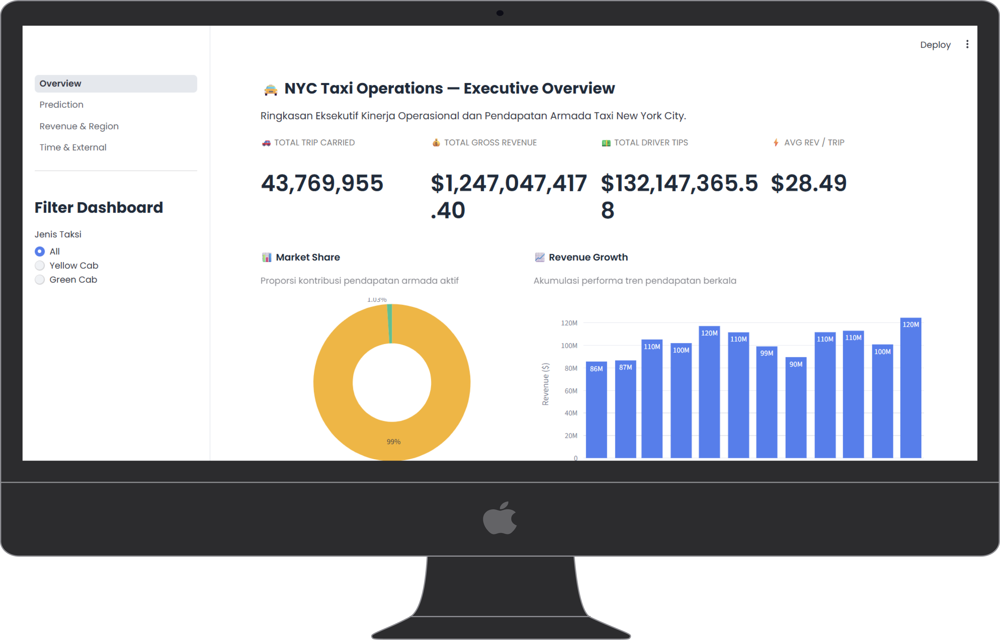

RDV - NYC Taxi Analytics
Data Engineer & ML Developer
Prefect, DuckDB, Streamlit, Folium, Python
May 2026 - Jun 2026
Project Description
RDV is an end-to-end data engineering and analytics project built around NYC Taxi trip data. The project combines a Prefect-orchestrated data pipeline with an interactive Streamlit dashboard that provides analytical insights and ML-based fare prediction. Data ingestion and transformation are handled using DuckDB for efficient in-process analytics, while external weather and public holiday datasets are integrated to enrich the trip data and improve prediction quality. The dashboard features geospatial visualizations powered by Folium maps, giving users an intuitive way to explore pickup and dropoff patterns across New York City.
Data Ingestion & Orchestration Pipeline
Built a Prefect-orchestrated pipeline to automate the ingestion of NYC Taxi trip data, integrating supplementary weather and public holiday datasets. The pipeline handles scheduling, task dependencies, and failure retries to ensure reliable data delivery.

DuckDB Analytics Layer
Used DuckDB as the in-process analytics engine for efficient SQL-based data transformation and aggregation. Engineered features from the raw trip data including time-based variables, weather conditions, and holiday flags for downstream ML use.

ML-Based Fare Prediction
Developed a machine learning model for taxi fare prediction, incorporating trip distance, time of day, weather conditions, and holiday indicators as features. The model is integrated directly into the Streamlit dashboard for interactive fare estimation.

Geospatial Dashboard with Folium
Built an interactive Streamlit dashboard featuring Folium-based geospatial maps to visualize taxi pickup and dropoff density across NYC zones. Combined with analytical charts and the fare prediction interface for a comprehensive analytics experience.

Process
Data Source Identification & Pipeline Design
Identified the NYC Taxi public dataset as the primary data source and planned the integration of weather and holiday data to enrich trip records. Designed the pipeline architecture using Prefect for orchestration and DuckDB for the transformation layer.
Pipeline Implementation with Prefect
Implemented the ingestion and transformation pipeline as Prefect flows, covering data download, parsing, cleaning, enrichment with external data sources, and loading into DuckDB for downstream analysis and model feature preparation.
Feature Engineering & Model Development
Engineered predictive features from the processed trip data, including temporal patterns, weather impact variables, and holiday flags. Trained and evaluated a fare prediction model, then packaged it for integration into the dashboard.
Dashboard Development with Streamlit & Folium
Built the interactive analytics dashboard using Streamlit, embedding Folium maps for geospatial visualization of trip patterns. Integrated the ML fare prediction model into the dashboard to allow users to estimate fares based on selected trip parameters.
Testing & Refinement
Tested the full pipeline end-to-end across different data batches to verify reliability. Refined dashboard interactivity and map rendering performance, and validated prediction outputs against held-out test data.